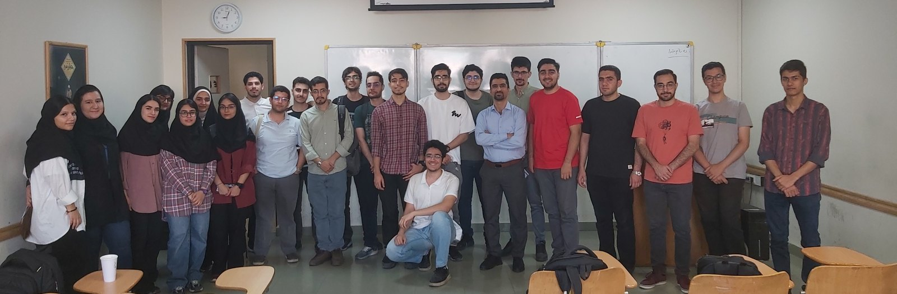

Faculty Member
Amirkabir University of Technology
2023 – 2025
Tehran, Iran
Faculty Member
University-level teaching across computer architecture, logic design, embedded systems, cyber-physical systems, digital design automation, and digital forensics.
